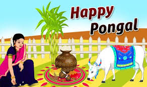

Enjoy The Moments....
-

- 
Importance: Pongal is one such festival, that is celebrated to thank the Sun God and Lord Indra for helping farmers in getting better-yielding crops. On Pongal day farmers prepare signature items like Pongal, Shakkara Pongal, sugarcane is offered. A special puja is also performed to thank the Sun god.
Pongal is one of the most important festivals celebrated by Tamil people in Tamil Nadu and Puducherry in India. It is also a major Tamil festival in Sri Lanka.
Importance of the Pongal
It is basically a harvesting festival or it can be considered as the 'thanksgiving' festival' because this festival is celebrated to thank the Sun God and Lord Indra for helping farmers in getting better-yielding crops. During the festival, people reject old belongings and welcome new stuff.
1.Pongal is the harvest festival of Tamil Nadu.
2.It is celebrated in the mid of January every year.
3.Pongal Celebrations lasts for 4 days.
4.Pongal is considered the beginning of Uttarayan.
5.People wear new clothes and pray God to shower his blessings on this day.